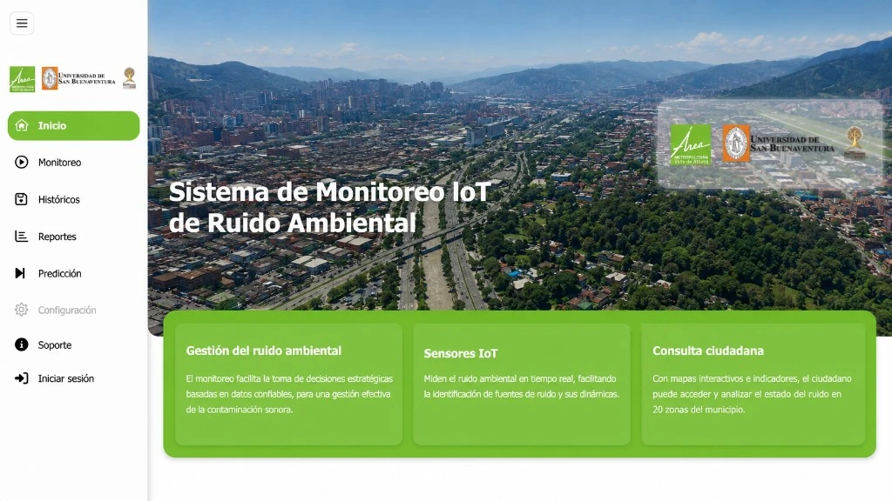

AMVA-USB
Monitoreo urbano y soluciones geoespaciales para el Área Metropolitana
Desarrollo y gestión inteligente de espacios urbanos mediante monitoreo acústico IoT, mapas de ruido, ecosistemas geoespaciales y planes de descontaminación. Integramos datos, modelación y herramientas 4.0 para que gobiernos y entidades tomen decisiones basadas en evidencia y avancen hacia ciudades más sostenibles y habitables.